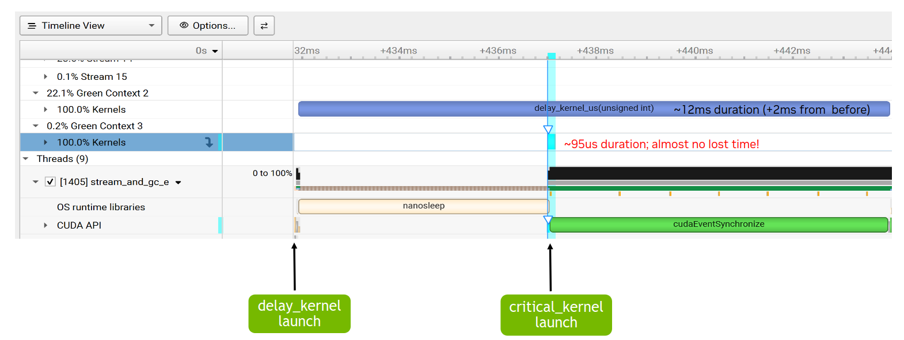

4.6. 绿色上下文#
绿色上下文（GC）是一种轻量级上下文，从创建开始就与一组特定的 GPU 资源关联。用户可以在创建绿色上下文时对 GPU 资源进行分区；目前可分区的资源包括流式多处理器（SM）和工作队列（WQ）。这样一来，面向某个绿色上下文提交的 GPU 工作只能使用预置给该上下文的 SM 和工作队列。这有助于减少，或更好地控制，因使用公共资源而产生的干扰。一个应用程序可以拥有多个绿色上下文。
使用绿色上下文不需要修改任何 GPU 代码（内核），只需要少量主机端改动，例如创建绿色上下文，并为该绿色上下文创建流。绿色上下文功能适用于多种场景。例如，在没有其他资源约束的前提下，它可以帮助确保始终有一部分 SM 可供延迟敏感内核立即开始执行；也可以在不修改内核的情况下，快速测试使用较少 SM 会带来什么影响。
绿色上下文支持最初通过 CUDA 驱动程序 API 提供。从 CUDA 13.1 开始，上下文通过执行上下文（EC）抽象暴露在 CUDA 运行时中。目前，执行上下文可以对应于主上下文（运行时 API 用户一直隐式交互的上下文），也可以对应于绿色上下文。本节在指代绿色上下文时，会交替使用 执行上下文 和 绿色上下文 这两个术语。
随着绿色上下文暴露到运行时中，强烈建议直接使用 CUDA 运行时 API。本节也只使用 CUDA 运行时 API。
本节其余部分安排如下：第 4.6.1 节 给出一个动机示例，第 4.6.2 节 突出易用性，第 4.6.3 节 介绍设备资源和资源描述符结构。第 4.6.4 节 解释如何创建绿色上下文，第 4.6.5 节 说明如何启动面向它的工作，第 4.6.6 节 重点介绍一些额外的绿色上下文 API。最后，第 4.6.7 节 以一个示例收尾。
4.6.1. 动机 / 何时使用#
启动 CUDA 内核时，用户无法直接控制该内核会在哪些 SM 上执行，也无法直接控制它会使用多少个 SM。用户只能通过改变内核启动几何形状，或改变任何会影响内核每个 SM 最大活动线程块数的因素，来间接影响这一点。此外，当多个内核在 GPU 上并行执行时，例如运行在不同 CUDA 流上，或作为 CUDA 图的一部分运行时，它们也可能争用同一批 SM 资源。
不过，在某些用例中，用户需要确保总有 GPU 资源可供延迟敏感工作尽快开始并完成。绿色上下文通过划分 SM 资源，为实现这一目标提供了一种方法：某个给定绿色上下文只能使用特定的 SM，也就是创建该上下文时预置给它的 SM。
图42 展示了这样一个示例。假设某个应用程序中有两个独立内核 A 和 B，它们运行在两个不同的非阻塞 CUDA 流上。内核 A 首先启动并开始执行，占用所有可用 SM 资源。稍后启动延迟敏感的内核 B 时，已经没有可用的 SM 资源。因此，内核 B 只能等到内核 A 开始收尾，也就是内核 A 的线程块陆续执行完成后，才开始执行。第一张图展示了关键工作 B 被延迟的场景。y 轴表示被占用的 SM 百分比，x 轴表示时间。

图42 动机：GC 的静态资源分区使延迟敏感的工作 B 能够更快地开始和完成#
使用绿色上下文时，可以对 GPU 的 SM 进行分区，使面向内核 A 的绿色上下文 A 只能访问 GPU 的一部分 SM，而面向内核 B 的绿色上下文 B 可以访问其余 SM。在这种设置下，无论启动配置如何，内核 A 都只能使用预置给绿色上下文 A 的 SM。因此，关键内核 B 启动时，可以保证有可用 SM 供其立即开始执行，除非还存在其他资源约束。如 图42 中第二张图所示，即使内核 A 的持续时间可能增加，延迟敏感工作 B 也不再会因为没有可用 SM 而被延迟。出于说明目的，该图展示绿色上下文 A 预置了相当于 GPU 80% SM 的 SM 数量。
实现这种行为无需修改内核 A 和 B 的任何代码。只需要确保它们在属于相应绿色上下文的 CUDA 流上启动即可。每个绿色上下文可以访问多少个 SM，应由用户在创建绿色上下文时根据具体情况决定。
工作队列:
流式多处理器是一种可以为绿色上下文预置的资源类型。另一种资源类型是工作队列。可以把工作队列理解为一种黑盒资源抽象；除其他因素外，它也会影响 GPU 工作执行的并发性。如果独立的 GPU 工作任务（例如提交到不同 CUDA 流上的内核）映射到同一个工作队列，这些任务之间就可能引入伪依赖，从而导致它们串行执行。用户可以通过 CUDA_DEVICE_MAX_CONNECTIONS 环境变量影响 GPU 上工作队列数量的上限（参见 第 5.2 节、第 3.1 节）。
沿用前面的示例，假设工作 B 映射到了与工作 A 相同的工作队列。在这种情况下，即使 SM 资源可用（也就是使用绿色上下文的情况），工作 B 仍然可能需要等待工作 A 完全完成。与 SM 类似，用户无法直接控制底层可能使用哪些具体工作队列。不过，绿色上下文允许用户根据预期并发的流有序工作负载数量，表达自己期望的最大并发度。随后，驱动程序可以把该值作为提示，尝试防止来自不同执行上下文的工作使用同一个工作队列，从而避免执行上下文之间不必要的干扰。
注意
即使为每个绿色上下文配置了不同的 SM 资源和工作队列，也不保证独立 GPU 工作一定会并发执行。更合适的理解是，绿色上下文 一节描述的所有技术，都是在移除可能阻止并发执行的因素，也就是减少潜在干扰。
绿色上下文与 MIG 或 MPS
为了完整起见，本节简要比较绿色上下文与另外两种资源分区机制：MIG（多实例 GPU） 和 MPS（多进程服务）。
MIG 会把支持 MIG 的 GPU 静态划分为多个 MIG 实例（“更小的 GPU”）。这种分区必须在应用程序启动之前完成，并且不同应用程序可以使用不同的 MIG 实例。对于那些总是无法充分利用可用 GPU 资源的应用程序，使用 MIG 可能很有帮助；随着 GPU 规模越来越大，这个问题会更加明显。借助 MIG，用户可以在不同 MIG 实例上运行这些不同应用程序，从而提高 GPU 利用率。MIG 对云服务提供商（CSP）也很有吸引力，不只是因为它能为这类应用程序提高 GPU 利用率，还因为它能在运行于不同 MIG 实例上的客户之间提供服务质量（QoS）和隔离。更多细节请参阅上面链接的 MIG 文档。
但是，MIG 无法解决前面描述的问题场景：关键工作 B 因同一应用程序中的其他 GPU 工作占用了所有 SM 资源而被延迟。这个问题对运行在单个 MIG 实例上的应用程序仍然可能存在。为解决该问题，可以将绿色上下文与 MIG 搭配使用。在这种情况下，可用于分区的 SM 资源就是给定 MIG 实例的资源。
MPS 主要面向不同进程（例如 MPI 程序），允许它们在 GPU 上同时运行而无需时间片轮转。它要求应用程序启动之前先运行 MPS 守护进程。默认情况下，MPS 客户端会争用 GPU 或其所在 MIG 实例的所有可用 SM 资源。在这种多客户端进程设置中，MPS 可以通过 活动线程百分比 选项支持 SM 资源的动态分区；该选项会给 MPS 客户端进程可使用的 SM 百分比设置上限。不同于绿色上下文，活动线程百分比分区通过 MPS 在进程级别进行，并且该百分比通常在应用程序启动之前由环境变量指定。MPS 活动线程百分比表示给定客户端应用程序不能使用超过某个 x% 的 GPU SM；假设这对应 N 个 SM，这些 SM 可以是 GPU 上的 任意 N 个 SM，而且会随时间变化。另一方面，在创建期间预置了 N 个 SM 的绿色上下文只能使用这特定的 N 个 SM。
从 CUDA 13.1 开始，如果在启动 MPS 控制守护进程时显式启用静态分区，MPS 也支持静态分区。在静态分区下，用户必须在应用程序启动时指定 MPS 客户端进程可以使用的静态分区；此时，基于活动线程百分比的动态共享不再适用。静态分区模式下的 MPS 与绿色上下文之间的主要区别在于，MPS 面向不同进程，而绿色上下文也适用于单个进程内部。此外，与绿色上下文相反，使用静态分区的 MPS 不允许超额订阅 SM 资源。
借助 MPS，对于通过带执行亲和性的 cuCtxCreate 驱动程序 API 创建的 CUDA 上下文，也可以对 SM 资源进行编程分区。这种编程分区允许来自一个或多个进程的不同客户端 CUDA 上下文各自最多使用指定数量的 SM。与活动线程百分比分区一样，这些 SM 可以是 GPU 上的任意 SM，并且可能随时间变化；这与绿色上下文不同。即使存在静态 MPS 分区，也可以使用这一选项。请注意，与 MPS 上下文相比，创建绿色上下文要轻量得多，因为许多底层结构归主上下文所有，因此会被共享。
4.6.2. 绿色上下文：易用性#
为了展示绿色上下文有多容易使用，假设你有下面这段代码：它创建两个 CUDA 流，然后调用一个函数，由该函数通过 <<<>>> 在这些 CUDA 流上启动内核。如前所述，除了改变内核的启动几何形状之外，我们无法影响这些内核可以使用多少个 SM。
int gpu_device_index = 0; // GPU 序号
CUDA_CHECK(cudaSetDevice(gpu_device_index));
cudaStream_t strm1, strm2;
CUDA_CHECK(cudaStreamCreateWithFlags(&strm1, cudaStreamNonBlocking));
CUDA_CHECK(cudaStreamCreateWithFlags(&strm2, cudaStreamNonBlocking));
// 无法控制每个流上运行的内核可以使用多少个 SM
code_that_launches_kernels_on_streams(strm1, strm2); // 该函数及其中的内核代表了代码的绝大部分
// 未显示清理代码
从 CUDA 13.1 开始，可以使用绿色上下文控制给定内核能够访问的 SM 数量。下面的代码片段展示做到这一点有多直接：只需要增加少量代码，而且无需修改任何内核，就可以控制在这些不同流上启动的内核能够使用哪些 SM 资源。
int gpu_device_index = 0; // GPU 序号
CUDA_CHECK(cudaSetDevice(gpu_device_index));
/* ------------------ 创建绿色上下文所需的代码 -------------------------- */
// 获取所有可用的 GPU SM 资源
cudaDevResource initial_GPU_SM_resources {};
CUDA_CHECK(cudaDeviceGetDevResource(gpu_device_index, &initial_GPU_SM_resources, cudaDevResourceTypeSm));
// 拆分 SM 资源。此示例创建一组 16 个 SM 和一组 8 个 SM。
// 假设你的 GPU 至少有 24 个 SM
cudaDevSmResource result[2] {{}, {}};
cudaDevSmResourceGroupParams group_params[2] = {
{.smCount=16, .coscheduledSmCount=0, .preferredCoscheduledSmCount=0, .flags=0},
{.smCount=8, .coscheduledSmCount=0, .preferredCoscheduledSmCount=0, .flags=0}};
CUDA_CHECK(cudaDevSmResourceSplit(&result[0], 2, &initial_GPU_SM_resources, nullptr, 0, &group_params[0]));
// 为每个资源生成资源描述符
cudaDevResourceDesc_t resource_desc1 {};
cudaDevResourceDesc_t resource_desc2 {};
CUDA_CHECK(cudaDevResourceGenerateDesc(&resource_desc1, &result[0], 1));
CUDA_CHECK(cudaDevResourceGenerateDesc(&resource_desc2, &result[1], 1));
// 创建绿色上下文
cudaExecutionContext_t my_green_ctx1 {};
cudaExecutionContext_t my_green_ctx2 {};
CUDA_CHECK(cudaGreenCtxCreate(&my_green_ctx1, resource_desc1, gpu_device_index, 0));
CUDA_CHECK(cudaGreenCtxCreate(&my_green_ctx2, resource_desc2, gpu_device_index, 0));
/* ------------------ 修改后的代码 -------------------------- */
// 只需要使用不同的 CUDA API 来创建流
cudaStream_t strm1, strm2;
CUDA_CHECK(cudaExecutionCtxStreamCreate(&strm1, my_green_ctx1, cudaStreamDefault, 0));
CUDA_CHECK(cudaExecutionCtxStreamCreate(&strm2, my_green_ctx2, cudaStreamDefault, 0));
/* ------------------ 未更改的代码 -------------------------------------- */
// 无需修改此函数或内核中的任何代码。
// 提醒：该函数及其中的内核代表了代码的绝大部分
// 现在，在流 strm1 上运行的内核最多使用 16 个 SM，
// 在 strm2 上运行的内核最多使用 8 个 SM。
code_that_launches_kernels_on_streams(strm1, strm2);
// 未显示清理代码
各种执行上下文 API（其中一些已经在前面的示例中出现）会接受显式的 cudaExecutionContext_t 句柄，因此会忽略调用线程的当前上下文。此前，不使用驱动程序 API 的 CUDA 运行时用户，默认只会与通过 cudaSetDevice() 隐式设为线程当前上下文的主上下文交互。与过去依赖线程本地状态（TLS）的隐式上下文编程相比，转向显式上下文编程可以提供更容易理解的语义，并可能带来额外收益。
下面几节将详细解释前面代码片段中展示的所有步骤。
4.6.3. 绿色上下文：设备资源和资源描述符#
绿色上下文的核心是绑定到特定 GPU 设备的设备资源（cudaDevResource）。资源可以组合并封装到描述符（cudaDevResourceDesc_t）中。绿色上下文只能访问封装在其创建描述符中的资源。
目前 cudaDevResource 数据结构定义为：
struct {
enum cudaDevResourceType type;
union {
struct cudaDevSmResource sm;
struct cudaDevWorkqueueConfigResource wqConfig;
struct cudaDevWorkqueueResource wq;
};
};
支持的有效资源类型包括 cudaDevResourceTypeSm、cudaDevResourceTypeWorkqueueConfig 和 cudaDevResourceTypeWorkqueue；cudaDevResourceTypeInvalid 则表示无效资源类型。
有效的设备资源可以与：
一组特定的流式多处理器（SM）（资源类型
cudaDevResourceTypeSm），特定的工作队列配置（资源类型
cudaDevResourceTypeWorkqueueConfig），或预先存在的工作队列资源（资源类型
cudaDevResourceTypeWorkqueue）。
可以分别使用 cudaExecutionCtxGetDevResource 和 cudaStreamGetDevResource API，查询给定执行上下文或 CUDA 流是否关联了某种类型的 cudaDevResource 资源。执行上下文可以关联不同类型的设备资源，例如 SM 和工作队列；而流只能关联 SM 类型资源。
默认情况下，给定 GPU 设备拥有全部三种设备资源类型：涵盖该 GPU 所有 SM 的 SM 类型资源、涵盖所有可用工作队列的工作队列配置资源，以及对应的工作队列资源。这些资源可以通过 cudaDeviceGetDevResource API 检索。
相关设备资源结构概述
不同资源类型结构中的字段，要么由用户显式设置，要么由相关 CUDA API 调用设置。建议对所有设备资源结构进行零初始化。
SM 类型的设备资源（
cudaDevSmResource）包含以下相关字段：unsigned int smCount：该资源中可用的 SM 数量unsigned int minSmPartitionSize：对该资源进行分区所需的最小 SM 数量unsigned int smCoscheduledAlignment：资源中保证会在同一 GPU 处理集群上共同调度的 SM 数量，该字段与线程块集群相关。当flags为零时，smCount是该值的倍数。unsigned int flags：支持的标志为 0（默认）和cudaDevSmResourceGroupBackfill（见cudaDevSmResourceGroup标志）。
上述字段会由用于创建该 SM 类型资源的相应拆分 API（
cudaDevSmResourceSplitByCount或cudaDevSmResourceSplit）设置，或者由用于检索给定 GPU 设备 SM 资源的cudaDeviceGetDevResourceAPI 填充。用户不应直接设置这些字段。更多细节请参见下一节。工作队列配置设备资源（
cudaDevWorkqueueConfigResource）包含以下相关字段：int device：工作队列资源可用的设备unsigned int wqConcurrencyLimit：预期用于避免伪依赖的流有序工作负载数量enum cudaDevWorkqueueConfigScope sharingScope：工作队列资源的共享范围。支持的值包括cudaDevWorkqueueConfigScopeDeviceCtx（默认）和cudaDevWorkqueueConfigScopeGreenCtxBalanced。使用默认选项时，所有工作队列资源会在所有上下文之间共享；使用均衡选项时，驱动程序会把用户指定的wqConcurrencyLimit作为提示，尽可能让不同绿色上下文使用不重叠的工作队列资源。
这些字段需要由用户设置。除了
cudaDeviceGetDevResourceAPI 会填充工作队列配置资源之外，没有类似拆分 API 的 CUDA API 会生成工作队列配置资源。该 API 可以检索给定 GPU 设备的工作队列配置资源。最后，预先存在的工作队列资源（
cudaDevResourceTypeWorkqueue）没有可由用户设置的字段。与其他资源类型一样，cudaDevGetDevResource可以检索给定 GPU 设备上预先存在的工作队列资源。
4.6.4. 绿色上下文创建示例#
创建绿色上下文主要涉及四个步骤：
第 1 步：从一组初始资源开始，例如获取 GPU 的可用资源
第 2 步：将 SM 资源划分为一个或多个分区（使用可用的拆分 API 之一）。
第 3 步：创建资源描述符，并在需要时组合不同资源
第 4 步：从描述符创建绿色上下文，并预置其资源
创建绿色上下文后，可以创建属于该绿色上下文的 CUDA 流。随后在这类流上启动的 GPU 工作（例如通过 <<< >>> 启动的内核）只能访问该绿色上下文预置的资源。只要用户把属于绿色上下文的流传给库，库也可以轻松利用绿色上下文。更多细节请参见 绿色上下文 - 启动工作。
4.6.4.1. 第 1 步：获取可用 GPU 资源#
创建绿色上下文的第一步是获取可用的设备资源，并填充 cudaDevResource 结构。目前有三个可能的起点：设备、执行上下文或 CUDA 流。
下面列出了相关的 CUDA 运行时 API 函数签名：
对于 device：
cudaError_t cudaDeviceGetDevResource(int device, cudaDevResource* resource, cudaDevResourceType type)对于 执行上下文：
cudaError_t cudaExecutionCtxGetDevResource(cudaExecutionContext_t ctx, cudaDevResource* resource, cudaDevResourceType type)对于 stream：
cudaError_t cudaStreamGetDevResource(cudaStream_t hStream, cudaDevResource* resource, cudaDevResourceType type)
所有有效的 cudaDevResourceType 类型都可以用于这些 API，但 cudaStreamGetDevResource 例外，它只支持 SM 类型资源。
通常，起点会是 GPU 设备。下面的代码片段展示如何获取给定 GPU 设备的可用 SM 资源。cudaDeviceGetDevResource 调用成功后，用户可以查看该资源中可用的 SM 数量。
int current_device = 0; // 假设设备序号为 0
CUDA_CHECK(cudaSetDevice(current_device));
cudaDevResource initial_SM_resources = {};
CUDA_CHECK(cudaDeviceGetDevResource(current_device /* GPU 设备 */,
&initial_SM_resources /* 要填充的设备资源 */,
cudaDevResourceTypeSm /* 资源类型 */));
std::cout << "Initial SM resources: " << initial_SM_resources.sm.smCount << " SMs" << std::endl; // 可用 SM 数量
// 与分区相关的特殊字段（参见下面的步骤 3）
std::cout << "Min. SM partition size: " << initial_SM_resources.sm.minSmPartitionSize << " SMs" << std::endl;
std::cout << "SM co-scheduled alignment: " << initial_SM_resources.sm.smCoscheduledAlignment << " SMs" << std::endl;
还可以获取可用的工作队列配置资源，如下面的代码片段所示。
int current_device = 0; // 假设设备序号为 0
CUDA_CHECK(cudaSetDevice(current_device));
cudaDevResource initial_WQ_config_resources = {};
CUDA_CHECK(cudaDeviceGetDevResource(current_device /* GPU 设备 */,
&initial_WQ_config_resources /* 要填充的设备资源 */,
cudaDevResourceTypeWorkqueueConfig /* 资源类型 */));
std::cout << "Initial WQ config. resources: " << std::endl;
std::cout << " - WQ concurrency limit: " << initial_WQ_config_resources.wqConfig.wqConcurrencyLimit << std::endl;
std::cout << " - WQ sharing scope: " << initial_WQ_config_resources.wqConfig.sharingScope << std::endl;
cudaDeviceGetDevResource 调用成功后，用户可以查看该资源的 wqConcurrencyLimit。当起点是 GPU 设备时，wqConcurrencyLimit 将匹配 CUDA_DEVICE_MAX_CONNECTIONS 环境变量的值，或其默认值。
4.6.4.2. 第 2 步：对 SM 资源进行分区#
创建绿色上下文的第二步，是把可用的 cudaDevResource SM 资源静态拆分为一个或多个分区，并且可能留下一部分 SM 形成 remaining 分区。可以使用 cudaDevSmResourceSplitByCount() 或 cudaDevSmResourceSplit() API 完成这种分区。cudaDevSmResourceSplitByCount() API 只能创建一个或多个 同构 分区，以及一个可选的 remaining 分区；而 cudaDevSmResourceSplit() API 还可以创建 异构 分区，以及可选的 remaining 分区。后续小节会详细描述这两个 API 的功能。两者仅适用于 SM 类型设备资源。
cudaDevSmResourceSplitByCount API
cudaDevSmResourceSplitByCount 运行时 API 签名为：
cudaError_t cudaDevSmResourceSplitByCount(cudaDevResource* result, unsigned int* nbGroups, const cudaDevResource* input,
cudaDevResource* remaining, unsigned int useFlags, unsigned int minCount)
如 图43 所示，用户请求把 input SM 类型设备资源拆分为 *nbGroups 个同构组，每组至少包含 minCount 个 SM。不过，最终结果可能包含更新后的 *nbGroups 个同构组，每组有 N 个 SM。更新后的 *nbGroups 小于或等于最初请求的组数，而 N 等于或大于 minCount。这些调整可能由特定架构的粒度和对齐要求造成。

图43 使用 cudaDevSmResourceSplitByCount API 拆分 SM 资源#
表30 列出了当前支持的所有计算能力在默认 useFlags=0 情况下的最小 SM 分区大小和 SM 共同调度对齐。也可以通过 cudaDevSmResource 的 minSmPartitionSize 和 smCoscheduledAlignment 字段检索这些值，如 第 1 步：获取可用 GPU 资源 所示。某些要求可以通过不同的 useFlags 值降低。表14 给出了一些相关示例，展示请求值与最终结果之间的差异，并附带说明。该表聚焦计算能力（CC 9.0）；在此平台上，如果 useFlags 为零，每个分区的最小 SM 数量为 8，且 SM 数量必须是 8 的倍数。
请求值 |
实际值（GH200，132 个 SM） |
||||
|---|---|---|---|---|---|
|
minCount |
useFlags |
|
剩余 SM |
原因 |
2 |
72 |
0 |
1 组，每组 72 个 SM |
60 |
不能超过 132 个 SM |
6 |
11 |
0 |
6 组，每组 16 个 SM |
36 |
8 的倍数要求 |
6 |
11 |
|
6 组，每组 12 个 SM |
60 |
要求降低为 2 的倍数。 |
2 |
1 |
0 |
2 组，每组 8 个 SM |
116 |
最小 8 个 SM 要求 |
下面的代码片段请求把可用 SM 资源拆分为 五组，每组 8 个 SM：
cudaDevResource avail_resources = {};
// 已填充 avail_resources 的代码未显示
unsigned int min_SM_count = 8;
unsigned int actual_split_groups = 5; // 可能会更新
cudaDevResource actual_split_result[5] = {{}, {}, {}, {}, {}};
cudaDevResource remaining_partition = {};
CUDA_CHECK(cudaDevSmResourceSplitByCount(&actual_split_result[0],
&actual_split_groups,
&avail_resources,
&remaining_partition,
0 /* useFlags */,
min_SM_count));
std::cout << "Split " << avail_resources.sm.smCount << " SMs into " << actual_split_groups << " groups " \
<< "with " << actual_split_result[0].sm.smCount << " each " \
<< "and a remaining group with " << remaining_partition.sm.smCount << " SMs" << std::endl;
请注意：
可以使用
result=nullptr查询将创建的组数。如果不关心 remaining 分区中的 SM，可以设置
remaining=nullptr。remaining（剩余）分区不具备 result 中同构组相同的功能或性能保证。
useFlags默认应为 0，但也支持cudaDevSmResourceSplitIgnoreSmCoscheduling和cudaDevSmResourceSplitMaxPotentialClusterSize。任何生成的
cudaDevResource都无法再次分区，除非先基于它创建资源描述符和绿色上下文（即下面的步骤 3 和步骤 4）。
更多细节请参见 cudaDevSmResourceSplitByCount 运行时 API 参考。
cudaDevSmResourceSplit API
如前所述，单次 cudaDevSmResourceSplitByCount API 调用只能创建同构分区，也就是 SM 数量相同的分区，以及剩余分区。对于异构工作负载，这可能有所限制，因为运行在不同绿色上下文上的工作可能需要不同数量的 SM。要使用按数量拆分 API 实现异构分区，通常需要通过重复步骤 1-4（可能多次）来重新分区已有资源。或者，在某些情况下，也可以在第 2 步中创建若干同构分区，每个分区的 SM 数量等于所有异构分区的最大公约数（GCD），然后在第 3 步中把所需数量的分区合并起来。不过，不建议使用最后这种方法，因为如果一开始就请求更大的大小，CUDA 驱动程序可能能够创建更好的分区。
cudaDevSmResourceSplit API 旨在解决这些限制，允许用户在一次调用中创建互不重叠的异构分区。cudaDevSmResourceSplit 运行时 API 签名为：
cudaError_t cudaDevSmResourceSplit(cudaDevResource* result, unsigned int nbGroups, const cudaDevResource* input,
cudaDevResource* remainder, unsigned int flags, cudaDevSmResourceGroupParams* groupParams)
该 API 会尝试根据 groupParams 数组中为每个组指定的要求，把 input SM 类型资源划分为 nbGroups 个有效设备资源（组），并放入 result 数组。它也可以创建一个可选的剩余分区。成功拆分时，如 图44 所示，result 中每个资源可以拥有不同数量的 SM，但绝不会是零个 SM。

图44 使用 cudaDevSmResourceSplit API 拆分 SM 资源#
请求异构拆分时，需要为 result 中的每个资源指定 SM 数量，也就是相关 groupParams 条目的 smCount 字段。该 SM 数量始终应为 2 的倍数。对于上图中的场景，groupParams[0].smCount 为 X，groupParams[1].smCount 为 Y，依此类推。
不过，如果应用使用 线程块集群，仅指定 SM 数量还不够。由于一个集群中的所有线程块保证会共同调度，因此用户还需要指定给定资源组应支持的最大集群大小（如果有）。这可以通过相关 groupParams 条目的 coscheduledSmCount 字段指定。对于计算能力 10.0 及以上（CC 10.0+）的 GPU，集群还可以有一个首选维度，它是默认集群维度的倍数。在受支持系统上的单次内核启动期间，如果可能，会尽量使用这个较大的首选集群维度；否则使用较小的默认集群维度。用户可以通过相关 groupParams 条目的 preferredCoscheduledSmCount 字段表达这个首选集群维度提示。最后，在某些情况下，用户可能希望放宽 SM 数量要求，并把更多可用 SM 填入给定组；可以把相关 groupParams 条目的 flags 字段设置为非默认标志值来表达这种回填选项。
为提供更大灵活性，cudaDevSmResourceSplit API 还有 discovery 模式，用于事先不知道一个或多个组的准确 SM 数量时。例如，用户可能希望创建一个拥有尽可能多 SM、同时满足某些共同调度要求（如允许大小为 4 的集群）的设备资源。要使用 discovery 模式，可以把相关 groupParams 条目（或多个条目）的 smCount 字段设为 0。cudaDevSmResourceSplit 调用成功后，groupParams 的 smCount 字段会填入有效的非零值；我们把它称为 actual smCount 值。如果 result 不为空（因此这不是 dry run），那么 result 中相关组的 smCount 也会设为同样的值。指定 nbGroups 个 groupParams 条目的顺序很重要，因为它们会从左到右（索引 0 到 nbGroups-1）依次评估。
表15 概览了 cudaDevSmResourceSplit API 支持的参数。
groupParams 数组；显示条目 i，其中 i ∈ [0, nbGroups) |
||||||||
|---|---|---|---|---|---|---|---|---|
result |
nbGroups |
input |
remainder |
flags |
smCount |
coscheduledSmCount |
preferredCoscheduledSmCount |
flags |
用于探索性 dry run 时为 nullptr；否则为非空指针 |
组数量 |
要拆分为 nbGroups 个组的资源 |
如果不需要剩余组，则为 nullptr |
0 |
发现模式为 0；否则为有效 smCount |
0（默认）或有效的共同调度 SM 数量 |
0（默认）或有效的首选共同调度 SM 数量（提示） |
0（默认）或 cudaDevSmResourceGroupBackfill |
注意：
cudaDevSmResourceSplitAPI 的返回值取决于result：
result != nullptr：只有拆分成功，并且创建了nbGroups个满足指定要求的有效cudaDevResource组时，API 才会返回cudaSuccess；否则返回错误。由于不同类型的错误可能返回相同错误码（例如CUDA_ERROR_INVALID_RESOURCE_CONFIGURATION），建议在开发过程中使用CUDA_LOG_FILE环境变量获取信息更充分的错误描述。
result == nullptr：即使某个组最终得到的smCount为零，API 也可能返回cudaSuccess；同样的情况在非 nullptr 的result下会返回错误。可以把这种模式看作探索受支持配置时使用的 dry run 测试，尤其适合 discovery 模式。
当
result != nullptr且调用成功时，对于 i ∈[0, nbGroups)，得到的result[i]设备资源将属于cudaDevResourceTypeSm类型，并带有一个result[i].sm.smCount。该值要么是用户指定的非零groupParams[i].smCount，要么是发现得到的值。两种情况下，result[i].sm.smCount都会满足以下全部约束：
是
2 的倍数；位于
[2, input.sm.smCount]范围内；并且
(flags == 0) ? (multiple of actual group_params[i].coscheduledSmCount) : (>= groups_params[i].coscheduledSmCount)
把
coscheduledSmCount或preferredCoscheduledSmCount字段指定为零，表示应使用这些字段的默认值；这些默认值可能因 GPU 而异。它们都等于通过cudaDeviceGetDevResourceAPI 为给定设备（而不是任意 SM 资源）检索到的 SM 资源的smCoscheduledAlignment。要查看这些默认值，可以先把相关groupParams条目设为 0，然后在cudaDevSmResourceSplit调用成功后检查其更新值；见下例。
int gpu_device_index = 0; cudaDevResource initial_GPU_SM_resources {}; CUDA_CHECK(cudaDeviceGetDevResource(gpu_device_index, &initial_GPU_SM_resources, cudaDevResourceTypeSm)); std::cout << "Default value will be equal to " << initial_GPU_SM_resources.sm.smCoscheduledAlignment << std::endl; int default_split_flags = 0; cudaDevSmResourceGroupParams group_params_tmp = {.smCount=0, .coscheduledSmCount=0, .preferredCoscheduledSmCount=0, .flags=0}; CUDA_CHECK(cudaDevSmResourceSplit(nullptr, 1, &initial_GPU_SM_resources, nullptr /* remainder */, default_split_flags, &group_params_tmp)); std::cout << "coscheduledSmcount default value: " << group_params.coscheduledSmCount << std::endl; std::cout << "preferredCoscheduledSmcount default value: " << group_params.preferredCoscheduledSmCount << std::endl;
剩余组（如果存在）不会对其 SM 数量或共同调度要求作任何限制。具体可支持什么，需要由用户自行探索。
在进一步说明 cudaDevSmResourceGroupParams 的各个字段之前，表16 展示了若干示例用例中这些值可能如何设置。假设已按前面的代码片段填充了一个 initial_GPU_SM_resources 设备资源，并且该资源就是将要拆分的资源。表中每一行都从同一个起点开始。为简单起见，该表只列出每个用例可在下面代码片段中使用的 nbGroups 值和 groupParams 字段。
int nbGroups = 2; // 根据需要更新
unsigned int default_split_flags = 0;
cudaDevResource remainder {}; // 根据需要更新
cudaDevResource result_use_case[2] = {{}, {}}; // 根据计划的组数更新。如果还计划使用工作队列资源，请增大数组
cudaDevSmResourceGroupParams group_params_use_case[2] = {{.smCount = X, .coscheduledSmCount=0, .preferredCoscheduledSmCount = 0, .flags = 0},
{.smCount = Y, .coscheduledSmCount=0, .preferredCoscheduledSmCount = 0, .flags = 0}}
CUDA_CHECK(cudaDevSmResourceSplit(&result_use_case[0], nbGroups, &initial_GPU_SM_resources, remainder, default_split_flags, &group_params_use_case[0]));
groupParams[i] 字段（i 按升序显示；参见最后一列） |
i |
|||||||
|---|---|---|---|---|---|---|---|---|
# |
目标 / 用例 |
nbGroups |
remainder |
smCount |
coscheduledSmCount |
preferredCoscheduledSmCount |
flags |
|
1 |
一个包含 16 个 SM 的资源。不关心剩余 SM。可以使用集群。 |
1 |
nullptr |
16 |
0 |
0 |
0 |
0 |
2a |
一个资源包含 16 个 SM，另一个包含其余所有 SM。不使用集群。 （注：这里展示两个选项：在选项 2a 中，第二个资源是 remainder；在选项 2b 中，它是 result_use_case[1]。） |
1 (2a) |
非 nullptr |
16 |
2 |
2 |
0 |
0 |
2b |
2 (2b) |
nullptr |
16 |
2 |
2 |
0 |
0 |
|
0 |
2 |
2 |
cudaDevSmResourceGroupBackfill |
1 |
||||
3 |
两个资源，分别包含 28 个和 32 个 SM。将使用大小为 4 的集群。 |
2 |
nullptr |
28 |
4 |
4 |
0 |
0 |
32 |
4 |
4 |
0 |
1 |
||||
4 |
一个资源包含尽可能多的 SM，能够运行大小为 8 的集群；另有一个 remainder。 |
1 |
非 nullptr |
0 |
8 |
8 |
0 |
0 |
5 |
一个资源包含尽可能多的 SM，能够运行大小为 4 的集群；另一个资源包含 8 个 SM。 （注意：顺序很重要！更改 groupParams 数组中条目的顺序，可能导致没有剩余 SM 可用于 8-SM 组。） |
2 |
nullptr |
8 |
2 |
2 |
0 |
0 |
0 |
4 |
4 |
0 |
1 |
||||
各种 cudaDevSmResourceGroupParams 结构字段的详细信息
smCount:
控制结果中相应组的 SM 数量。
取值：0（discovery 模式）或有效的非零值（非 discovery 模式）
有效非零
smCount值要求：(multiple of 2) and in [2, input->sm.smCount] and ((flags == 0) ? multiple of actual coscheduledSmCount : greater than or equal to coscheduledSmCount)
用例：当 SM 数量未知或未固定时，使用 discovery 模式探索可能结果；当需要特定 SM 数量时，使用非 discovery 模式发出请求。
注意：在 discovery 模式下，使用非 nullptr 的
result成功调用 split 后，实际 SM 数量将满足有效非零值要求。
coscheduledSmCount:
控制为了支持在计算能力 9.0+ 上启动不同集群而被分在一起（“共同调度”）的 SM 数量。因此，它会影响结果组中的 SM 数量，以及这些组可支持的集群大小。
取值：0（当前架构的默认值）或有效的非零值
有效非零值要求：
(multiple of 2)，并且不超过最大限制
用例：如果使用集群，可以采用默认值，也可以手动选择一个值，同时记住给定架构上的最大可移植集群大小。如果代码不使用集群，可以使用支持的最小值 2 或默认值。
注意：使用默认值时，成功拆分调用后的实际
coscheduledSmCount也会满足有效非零值要求。如果flags不为零，则生成的smCount将大于或等于coscheduledSmCount。可以把coscheduledSmCount看作给有效结果组提供某种有保证的底层“结构”：在最坏情况下，该组至少可以运行一个大小为coscheduledSmCount的集群。这样的结构保证不适用于剩余组；对于剩余组，用户需要自行探索可以启动的集群大小。
preferredCoscheduledSmCount:
提示驱动程序在可能时，尝试把实际的
coscheduledSmCount个 SM 组合成更大的preferredCoscheduledSmCount组。这样可以让代码利用计算能力（CC）10.0 及以上设备提供的首选集群维度功能。参见 cudaLaunchAttributeValue::preferredClusterDim。取值：0（当前架构的默认值）或有效的非零值
有效非零值要求：
(multiple of actual coscheduledSmCount)
用例：如果使用首选集群，并且运行在计算能力 10.0（Blackwell）或更高版本的设备上，可以手动选择一个大于 2 的值。如果不使用集群，请选择与
coscheduledSmCount相同的值：选择支持的最小值 2，或者两个字段都使用 0。注意：使用默认值时，成功拆分调用后的实际
preferredCoscheduledSmCount也会满足有效非零值要求。
flags:
控制组的最终 SM 数量是实际共同调度 SM 数量的倍数（默认），还是允许把额外 SM 回填到该组中（backfill）。在 backfill 情况下，得到的 SM 数量（
result[i].sm.smCount）将大于或等于指定的groupParams[i].smCount。取值：0（默认）或
cudaDevSmResourceGroupBackfill用例：使用 0（默认）时，生成的组会保证具备支持多个
coScheduledSmCount大小集群的灵活性。如果希望一个组获得尽可能多的 SM，并且接受其中部分 SM（回填的 SM）不提供任何共同调度保证，可以使用 backfill 选项。注意：使用 backfill 标志创建的组仍然可以支持集群，例如保证至少支持一个
coscheduledSmCount大小的集群。
4.6.4.3. 第 2 步（续）：添加工作队列资源#
如果还想指定工作队列资源，需要显式完成。下面的示例展示如何为特定设备创建工作队列配置资源，并设置平衡共享范围以及并发限制 4。
cudaDevResource split_result[2] = {{}, {}};
// 未显示填充 split_result[0] 的代码；使用 nbGroups=1 的拆分 API
// 最后一个资源将是工作队列资源。
split_result[1].type = cudaDevResourceTypeWorkqueueConfig;
split_result[1].wqConfig.device = 0; // 假设设备序号为 0
split_result[1].wqConfig.sharingScope = cudaDevWorkqueueConfigScopeGreenCtxBalanced;
split_result[1].wqConfig.wqConcurrencyLimit = 4;
工作队列并发限制为 4，会向驱动程序提示用户预期最多有四个并发的流有序工作负载。如果可能，驱动程序会在分配工作队列时尝试遵循这一提示。
4.6.4.4. 第 3 步：创建资源描述符#
资源拆分完成后，下一步是使用 cudaDevResourceGenerateDesc API，为预计可供绿色上下文使用的所有资源生成资源描述符。
相关的 CUDA 运行时 API 函数签名为：
cudaError_t cudaDevResourceGenerateDesc(cudaDevResourceDesc_t *phDesc, cudaDevResource *resources, unsigned int nbResources)
可以组合多个 cudaDevResource 资源。例如，下面的代码片段展示如何生成一个封装三组资源的资源描述符。只需要确保这些资源在 resources 数组中连续分配。
cudaDevResource actual_split_result[5] = {};
// 未显示填充 actual_split_result 的代码
// 生成资源描述符，封装 3 个资源：actual_split_result[2] 到 [4]
cudaDevResourceDesc_t resource_desc;
CUDA_CHECK(cudaDevResourceGenerateDesc(&resource_desc, &actual_split_result[2], 3));
还支持组合不同类型的资源。例如，可以生成具有 SM 和工作队列资源的描述符。
要让 cudaDevResourceGenerateDesc 调用成功：
所有
nbResources个资源都应属于同一个 GPU 设备。如果组合多个 SM 类型资源，则它们应由同一次拆分 API 调用生成，并具有相同的
coscheduledSmCount值（如果它们不是 remainder 的一部分）。只能存在单个工作队列配置或工作队列类型资源。
4.6.4.5. 第 4 步：创建绿色上下文#
最后一步是使用 cudaGreenCtxCreate API，从资源描述符创建绿色上下文。该绿色上下文只能访问创建期间指定的资源描述符中封装的资源（例如 SM、工作队列）。这些资源将在此步骤中完成预置。
相关的 CUDA 运行时 API 函数签名为：
cudaError_t cudaGreenCtxCreate(cudaExecutionContext_t *phCtx, cudaDevResourceDesc_t desc, int device, unsigned int flags)
flags 参数应设置为 0。还建议在创建绿色上下文之前，通过 cudaInitDevice API 或 cudaSetDevice API 显式初始化设备的主上下文；其中 cudaSetDevice 还会把主上下文设为调用线程的当前上下文。这样可以确保创建绿色上下文时不会产生额外的主上下文初始化开销。
请参见下面的代码片段。
int current_device = 0; // 假设单 GPU
CUDA_CHECK(cudaSetDevice(current_device)); // 或者 cudaInitDevice
cudaDevResourceDesc_t resource_desc {};
// 未显示生成 resource_desc 的代码
// 在 ID 为 current_device 的 GPU 上创建 green_ctx，并允许其访问 resource_desc 中的资源
cudaExecutionContext_t green_ctx {};
CUDA_CHECK(cudaGreenCtxCreate(&green_ctx, resource_desc, current_device, 0));
成功创建绿色上下文后，用户可以针对每种资源类型，在该执行上下文上调用 cudaExecutionCtxGetDevResource 来验证其资源。
创建多个绿色上下文
一个应用程序可以拥有多个绿色上下文；在这种情况下，应重复上述部分步骤。对于大多数用例，这些绿色上下文各自会拥有一组独立且不重叠的预置 SM。例如，对于五个同构 cudaDevResource 组（actual_split_result 数组）的情况，一个绿色上下文的描述符可以封装 actual_split_result[2] 到 [4] 的资源，而另一个绿色上下文的描述符可以封装 actual_split_result[0] 到 [1]。在这种情况下，某个特定 SM 只会被预置给应用程序两个绿色上下文中的一个。
不过，SM 超额订阅也是可能的，并且在某些情况下可以使用。例如，让第二个绿色上下文的描述符封装 actual_split_result[0] 到 [2] 也是可以接受的。在这种情况下，actual_split_resource[2] 这个 cudaDevResource 中的所有 SM 都会被超额订阅，也就是同时预置给两个绿色上下文；而 actual_split_resource[0] 到 [1] 以及 actual_split_resource[3] 到 [4] 的资源只会被两个绿色上下文之一使用。是否超额订阅 SM，应按具体情况谨慎判断。
4.6.5. 绿色上下文 - 启动工作#
要启动面向前面步骤所创建绿色上下文的内核，首先需要使用 cudaExecutionCtxStreamCreate API 为该绿色上下文创建一个流。随后使用 <<< >>> 或 cudaLaunchKernel API 在该流上启动内核，就能确保该内核只能使用该流通过其执行上下文可访问的资源（SM、工作队列）。例如：
// 为之前创建的 green_ctx 绿色上下文创建 green_ctx_stream CUDA 流
cudaStream_t green_ctx_stream;
int priority = 0;
CUDA_CHECK(cudaExecutionCtxStreamCreate(&green_ctx_stream,
green_ctx,
cudaStreamDefault,
priority));
// 内核 my_kernel 将仅使用 green_ctx_stream 执行上下文可用的资源（SM、工作队列，如适用）
my_kernel<<<grid_dim, block_dim, 0, green_ctx_stream>>>();
CUDA_CHECK(cudaGetLastError());
如果 green_ctx 是绿色上下文，那么传给上面流创建 API 的默认流创建标志等价于 cudaStreamNonBlocking。
CUDA 图
对于作为 CUDA 图的一部分启动的内核（参见 CUDA 图），还需要注意一些细节。与普通内核启动不同，启动 CUDA 图的 CUDA 流不会决定要使用的 SM 资源，因为该流只用于依赖关系跟踪。
内核节点（以及其他适用的节点类型）执行所在的执行上下文，会在节点创建期间设置。如果使用流捕获创建 CUDA 图，则参与捕获的流的执行上下文会决定相关图节点的执行上下文。如果使用图 API 创建图，则用户应显式设置每个相关节点的执行上下文。例如，要添加内核节点，用户应使用带 cudaGraphNodeTypeKernel 类型的多态 cudaGraphAddNode API，并显式指定 cudaKernelNodeParamsV2 结构中 .kernel 下的 .ctx 字段。cudaGraphAddKernelNode 不允许用户指定执行上下文，因此应避免使用。请注意，同一个图中的不同图节点可能属于不同执行上下文。
出于验证目的，可以在节点跟踪模式下使用 Nsight Systems（--cuda-graph-trace node），观察特定图节点将在哪个绿色上下文上执行。请注意，在默认的 graph 跟踪模式下，整个图会显示在启动它的流所属绿色上下文下；但如前所述，这并不会提供各个图节点执行上下文的信息。
如果要以编程方式验证，可以使用 CUDA 驱动程序 API cuGraphKernelNodeGetParams(graph_node, &node_params)，并将 node_params.ctx 上下文句柄字段与该图节点预期的上下文句柄进行比较。驱动程序 API 的 CUgraphNode 和 cudaGraphNode_t 可以互换使用，但用户需要包含相关的 cuda.h 头文件，并直接链接驱动程序库（-lcuda）。
线程块簇
带有线程块集群的内核（参见 第 1.2.2.1.1 节）也可以像其他内核一样在绿色上下文流上启动，从而使用该绿色上下文预置的资源。第 4.6.4.2 节 展示了在拆分设备资源时如何指定需要共同调度的 SM 数量，以便支持集群。不过，与任何使用集群的内核一样，用户仍应使用相关占用率 API 来确定内核的最大潜在集群大小（通过 cudaOccupancyMaxPotentialClusterSize），以及在需要时确定最大活动集群数量（cudaOccupancyMaxActiveClusters）。如果用户在相关 cudaLaunchConfig 的 stream 字段中指定绿色上下文流，这些占用率 API 会把预置给该绿色上下文的 SM 资源纳入考虑。这个用例尤其适用于可能接收用户传入绿色上下文 CUDA 流的库，也适用于从剩余设备资源创建绿色上下文的情况。
下面的代码片段展示如何使用这些 API。
// 假设 cudaStream_t gc_stream 已经创建并且存在 __global__ void cluster_kernel。
// 如果可能，取消注释以支持不可移植的集群大小
// CUDA_CHECK(cudaFuncSetAttribute(cluster_kernel, cudaFuncAttributeNonPortableClusterSizeAllowed, 1))
cudaLaunchConfig_t config = {0};
config.gridDim = grid_dim; // 必须是 cluster dim 的倍数。
config.blockDim = block_dim;
config.dynamicSmemBytes = expected_dynamic_shared_mem;
cudaLaunchAttribute attribute[1];
attribute[0].id = cudaLaunchAttributeClusterDimension;
attribute[0].val.clusterDim.x = 1;
attribute[0].val.clusterDim.y = 1;
attribute[0].val.clusterDim.z = 1;
config.attrs = attribute;
config.numAttrs = 1;
config.stream=gc_stream; // 需要传入该内核将使用的 CUDA 流
int max_potential_cluster_size = 0;
// 下一次调用会忽略启动配置中的 cluster dims
CUDA_CHECK(cudaOccupancyMaxPotentialClusterSize(&max_potential_cluster_size, cluster_kernel, &config));
std::cout << "max potential cluster size is " << max_potential_cluster_size << " for CUDA stream gc_stream" << std::endl;
// 可以选择使用 max_potential_cluster_size 更新启动配置的 clusterDim。
// 这样可让相同内核和启动配置的 cudaLaunchKernelEx 调用成功。
int num_clusters= 0;
CUDA_CHECK(cudaOccupancyMaxActiveClusters(&num_clusters, cluster_kernel, &config));
std::cout << "Potential max. active clusters count is " << num_clusters << std::endl;
验证绿色上下文的使用
除了通过经验观察绿色上下文预置对内核执行时间的影响之外，用户还可以借助 Nsight Systems 和 Nsight Compute CUDA 开发者工具，在一定程度上验证绿色上下文是否使用正确。
例如，在属于不同绿色上下文的 CUDA 流上启动的内核，会出现在 Nsight Systems 报告的 CUDA HW 时间线部分中不同的 Green Context 行下。Nsight Compute 会在 Session 页面提供 Green Context Resources 概览，并在 Details 部分的 Launch Statistics 下更新 # SMs。前者提供预置资源的可视化位掩码。如果应用程序使用不同绿色上下文，这一点特别有用，因为用户可以确认 GC 之间是否存在预期的重叠：没有重叠，或在 SM 被超额订阅时出现预期的非零重叠。
图45 展示了一个资源示例：两个绿色上下文分别预置了 112 个和 16 个 SM，并且二者之间没有 SM 重叠。该视图可以帮助用户验证每个绿色上下文预置的 SM 资源数量。它还有助于确认没有 SM 被超额订阅，因为两个绿色上下文中没有任何方框同时被标为绿色（即预置给该 GC）。

图45 Nsight Compute 中的绿色上下文资源部分#
Launch Statistics 部分还会明确列出为该绿色上下文预置、因而可供该内核使用的 SM 数量。请注意，这些是给定内核在执行期间可以访问的 SM，而不是该内核实际运行其上的 SM 数量。前面显示的资源概览也同样如此。内核实际使用的 SM 数量可能取决于多种因素，包括内核本身（启动几何形状等）、GPU 上同时运行的其他工作等。
4.6.6. 附加执行上下文 API#
本节介绍一些额外的绿色上下文 API。完整列表请参见相关的 CUDA 运行时 API 章节。
如果使用 CUDA 事件进行同步，可以使用 cudaError_t cudaExecutionCtxRecordEvent(cudaExecutionContext_t ctx, cudaEvent_t event) 和 cudaError_t cudaExecutionCtxWaitEvent(cudaExecutionCtxWaitEvent(cudaExecutionContext_t ctx, cudaEvent_t event) API。cudaExecutionCtxRecordEvent 会记录一个 CUDA 事件，捕获调用时指定执行上下文中的所有工作或活动；而 cudaExecutionCtxWaitEvent 会让之后提交到该执行上下文的所有工作等待指定事件中捕获的工作。
如果执行上下文有多个 CUDA 流，使用 cudaExecutionCtxRecordEvent 比使用 cudaEventRecord 更方便。若没有这个执行上下文 API，要实现等价行为，就需要在每个执行上下文流上通过 cudaEventRecord 分别记录 CUDA 事件，然后让相关工作分别等待所有这些事件。同样，如果需要执行上下文中的所有流都等待某个事件完成，cudaExecutionCtxWaitEvent 也比 cudaStreamWaitEvent 更方便。替代做法是对该执行上下文中的每个流分别调用一次 cudaStreamWaitEvent。
对于 CPU 端的阻塞同步，可以使用 cudaError_t cudaExecutionCtxSynchronize(cudaExecutionContext_t ctx)。该调用会阻塞，直到指定执行上下文完成其所有工作。如果指定的执行上下文不是通过 cudaGreenCtxCreate 创建，而是通过 cudaDeviceGetExecutionCtx 获取，也就是设备的主上下文，那么调用该函数还会同步同一设备上已经创建的所有绿色上下文。
要检索给定执行上下文关联的设备，可以使用 cudaExecutionCtxGetDevice。要检索给定执行上下文的唯一标识符，可以使用 cudaExecutionCtxGetId。
最后，可以通过 cudaError_t cudaExecutionCtxDestroy(cudaExecutionContext_t ctx) API 销毁显式创建的执行上下文。
4.6.7. 绿色上下文示例#
本节说明绿色上下文如何让关键工作更早开始并更早完成。与 第 4.6.1 节 中的场景类似，该应用程序有两个内核，它们会在两个不同的非阻塞 CUDA 流上运行。从 CPU 侧看，时间线如下：一个长时间运行的内核（delay_kernel_us）首先在 CUDA 流 strm1 上启动，它会在完整 GPU 上经历多轮执行；随后经过短暂等待（小于该内核持续时间）后，一个更短但关键的内核（critical_kernel）在 strm2 上启动。这里会测量两个内核的 GPU 持续时间，以及从 CPU 发起启动到完成所经历的时间。
示例使用一个延迟内核作为长时间运行内核的替身：其中每个线程块运行固定的微秒数，并且线程块数量超过 GPU 的可用 SM 数量。
一开始不使用绿色上下文，但关键内核会在优先级高于长时间运行内核的 CUDA 流上启动。由于使用高优先级流，关键内核可以在长时间运行内核的部分线程块完成后立即开始执行。不过，它仍然需要等待一些可能运行较久的线程块完成，因此其执行开始时间仍会被延迟。
图46 在 Nsight Systems 报告中展示了这一场景。长时间运行的内核在流 13 上启动，而短但关键的内核在流 14 上启动，后者具有更高的流优先级。如图中突出显示，在这个示例中，关键内核要等待 0.9 毫秒才能开始执行。如果两个流优先级相同，关键内核会更晚执行。

图46 没有绿色上下文的 Nsight Systems 时间线#
为了利用绿色上下文功能，示例创建了两个绿色上下文，每个绿色上下文都预置了一组不同且不重叠的 SM。出于说明目的，本例在具有 132 个 SM 的 H100 上选择了一个具体的 SM 拆分：关键内核使用 16 个 SM（绿色上下文 3），长时间运行内核使用 112 个 SM（绿色上下文 2）。如 图47 所示，关键内核现在几乎可以立即开始，因为有一组 SM 只有绿色上下文 3 可以使用。
与单独运行时相比，短内核的持续时间可能会增加，因为它现在可使用的 SM 数量受到限制。长时间运行内核也是如此，因为它不能再使用 GPU 的所有 SM，而是受其绿色上下文预置资源限制。不过，关键结果是，关键内核工作现在可以比以前明显更早开始并完成。这里仍以不受其他限制为前提；如前所述，并行执行并不保证一定发生。
{kind=link}

图47 具有绿色上下文的 Nsight Systems 时间线#
在所有情况下，具体的 SM 拆分都应在实验后按用例决定。